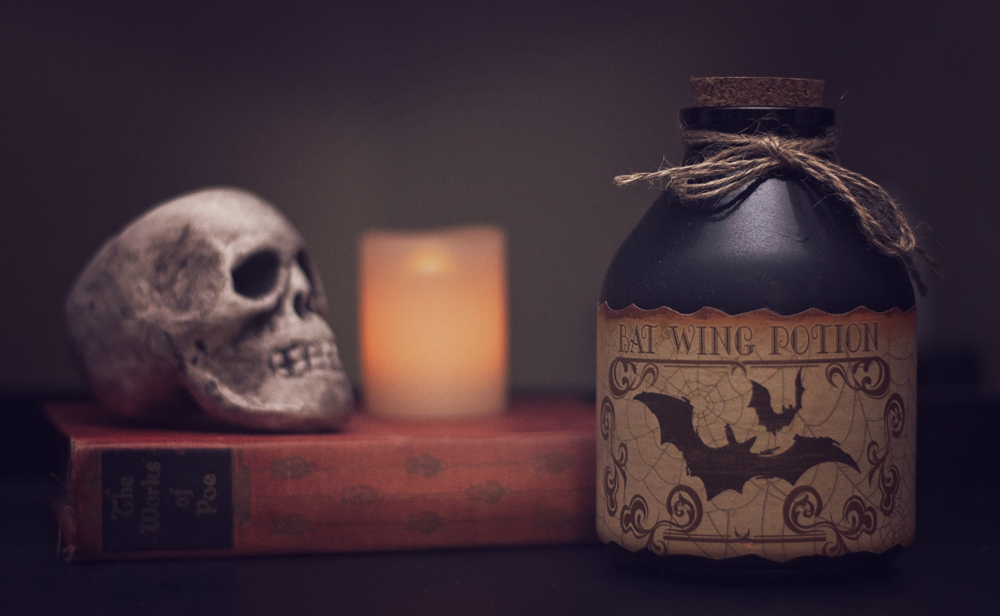

During the Halloween season, I love to sit down each night and watch a new Halloween movie. I enjoy all the classics, including the Halloween Town series, Twitches, and The Nightmare Before Christmas—even with the ongoing debate about whether that film is a Christmas movie or a Halloween movie. I believe tradition is important, and for me, this is one of them. Below are some of my favorite movies!
When it comes to Halloween, I don't mess around with decorations. Though I can't always perfectly capture the “spooky” vibe, whenever you enter my domain you'll always feel an eerie charm. I've got flickering lights and pumpkins everywhere, with cobwebs draped across corners and little skeletons hiding in unexpected places. The scent of autumn candles and the soft glow of orange lights make the whole space feel like a haunted hideaway
Haunted houses are an amazing activity to get your friends together and have a nice night out. Weather your at someones actual house and going through their garage, or at a production. I will say the productions are actually scary and more fun, but if theres a spooky activity I will be there.